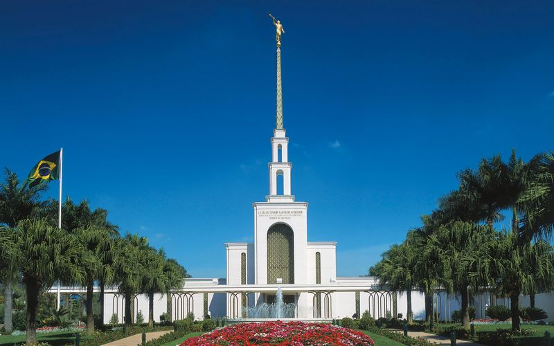
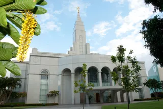
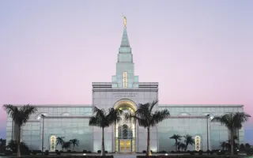
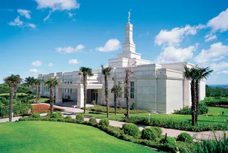
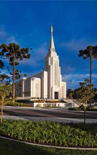
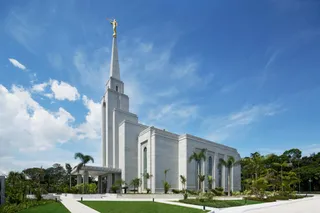
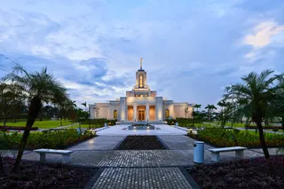
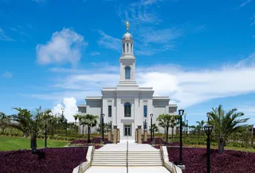
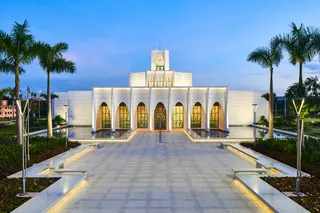

Temple Album
Home
Old
New
Large
Small
Home

Brazil São Paulo Temple

Brazil Recife Temple

Brazil Campinas Temple

Brazil Porto Alegre Temple

Brazil Curitiba Temple

Brazil Manaus Temple

Brazil Belém Temple

Brazil Fortaleza Temple

Brazil Brasília Temple